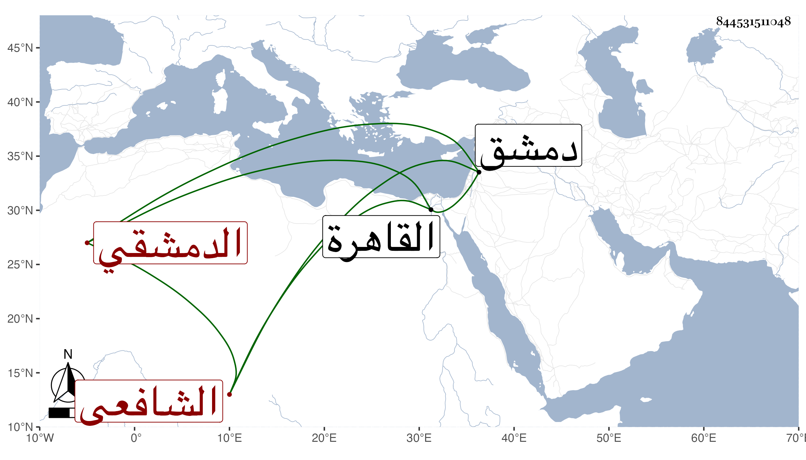

0902Sakhawi.DawLamic.ITO20230111-ara1.EIS1600.844531511048
Biography ID: 844531511048
475
أحمد بن محمد بن قماقم شهاب الدين الدمشقي الشافعي ، وقماقم لقب أبيه ويعرف أيضا بالفقاعي وهي حرفة أبيه ورأيته بخطي من معجم شيخنا القباقبي والأول الصواب . نشأ هو فاشتغل بالعلم وأخذ عن العلاء حجي وغيره وأذن له مدرس الشامية في الإفتاء سنة ثلاث وثمانين وسبعمائة وقرأ بالروايات على ابن السلار ، وقدم القاهرة سنة الكائنة العظمى فأقام بها مدة واجتمع بشيخنا مرارا وسمع بقراءته على البلقيني وغيره في الحديث والفقه وكان يفهم ويذاكر ، بل قال ابن حجي أنه كان يستحضر البويطي بحيث سمعت البلقيني يسميه البويطي لكثرة استحضاره له . وقد درس بالأمجدية . مات في جمادى سنة تسع بدمشق . قاله شيخنا في تاريخه .
